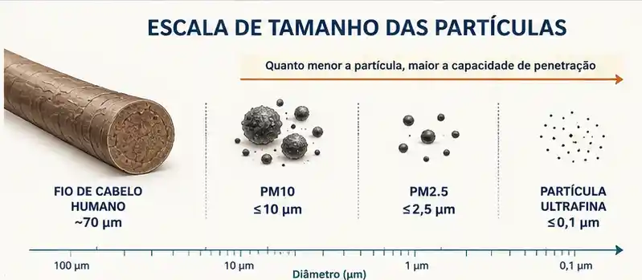
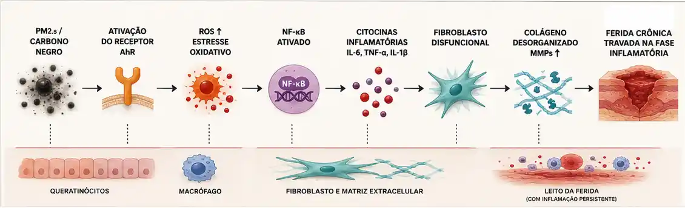
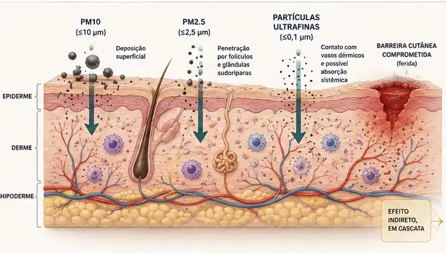
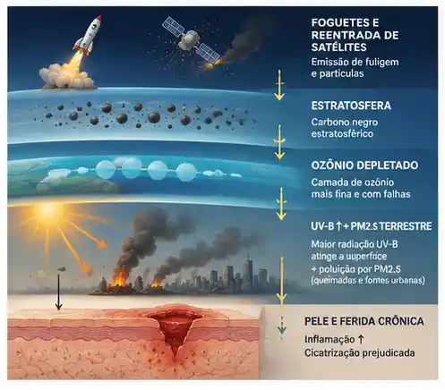
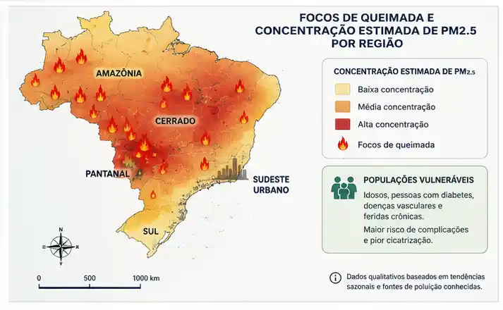

O que é fuligem, afinal?
A fuligem — chamada de carbono negro (black carbon) pela ciência — é formada por partículas ultrafinas de carbono não-completamente queimado. Ela nasce de motores a diesel, queimadas, indústrias e, mais recentemente, de foguetes espaciais.
Tamanho
PM2.5 (<2,5 µm) e ultrafinas (<0,1 µm). Invisíveis a olho nu, atravessam pulmões e alcançam a corrente sanguínea.4
Composição
Além do carbono, carrega metais pesados, hidrocarbonetos policíclicos aromáticos (PAH) e compostos orgânicos tóxicos.5
Persistência
No solo, é lavada pela chuva em dias. Na estratosfera, permanece por anos — e esse é o grande problema novo.2

Duas fontes, um mesmo problema: fuligem terrestre (carros, queimadas, indústria) afeta principalmente a troposfera. A nova fuligem espacial (foguetes, reentrada de satélites) fica presa na estratosfera — longe da chuva, longe da depuração natural.
Como o carbono negro invade o corpo e trava a cicatrização
A trajetória da fuligem do ar até a ferida crônica passa por cinco mecanismos interligados. Cada etapa amplifica a próxima — criando um ciclo que a pele lesionada não consegue romper sozinha.
1. Entrada: pulmão, pele e até sweat glands
PM2.5 penetra por vias aéreas e atinge a circulação. Estudos mostram que partículas finas infiltram inclusive a pele íntegra por folículos pilosos e glândulas sudoríparas. Em pele com barreira comprometida — como ao redor de feridas crônicas — a penetração é ainda maior.6
2. Estresse Oxidativo: ROS em cascata
Partículas de fuligem (especialmente os PAHs e metais que carregam) ativam o receptor AhR e induzem produção maciça de espécies reativas de oxigênio (ROS). A via NF-κB é ativada, disparando uma tempestade inflamatória de IL-6, TNF-α e IL-1β.7,8
🔬 O problema para feridas: feridas crônicas já apresentam excesso de ROS basal. A poluição turbina esse desequilíbrio, travando a ferida na fase inflamatória permanentemente.
3. Barreira cutânea quebrada
Queratinócitos expostos ao PM2.5 reduzem expressão de filagrina e loricrina — proteínas estruturais chave. Isso compromete a integridade da barreira epidérmica e inicia respostas inflamatórias adicionais, criando um portal permanente para novos agentes agressores.9
4. Disfunção dos Fibroblastos
Fibroblastos dérmicos expostos à fuligem ativam IL-13 e TGF-β via células imunes. Isso leva ao fenótipo fibrótico: produção excessiva e desorganizada de colágeno, com dois receptores-chave (heparina 1 e receptor ativado por protease 2) sendo disfuncionalizados. O resultado é colágeno que não fecha a ferida — apenas a inflama mais.5
🔬 Matriz Metaloproteinases (MMPs) ativadas: monócitos e macrófagos estimulados pela fuligem liberam MMPs em excesso, degradando colágeno e elastina antes mesmo da síntese completar-se — destruindo o andaime da cicatrização.6
5. Lesão Microvascular e Estado Pró-Trombótico
PM2.5 circulante induz ativação plaquetária, geração de trombina e lesão endotelial. O resultado é um estado pró-trombótico sistêmico com microangiopatia — exatamente o substrato das úlceras venosas, arteriais e diabéticas, onde a perfusão já é crítica.10

A pele no epicentro: quando a barreira vira porta de entrada
A pele é o único órgão com exposição dupla: recebe poluentes por contato direto e pelos poluentes que chegam pela circulação via pulmão. Para feridas crônicas, isso é catastrófico: a área lesionada é um portal aberto.
Queratinócitos (Epiderme)
Detectam PM2.5 via AhR → ativam produção de ROS e citocinas → reduzem filagrina e loricrina → barreira quebrada → ferida não re-epiteliza.9
Fibroblastos (Derme)
Respondem a mediadores inflamatórios → adquirem fenótipo fibrótico → colágeno desorganizado → sem fechamento funcional da ferida.5
Macrófagos Dérmicos
Poluição compromete a polarização M1→M2, atrasando a resolução da inflamação — fase obrigatória para progredir à proliferação.12
Mitocôndrias Celulares
Disfunção mitocondrial por PM2.5 reduz produção de ATP e libera fatores pró-apoptóticos — células com menor capacidade regenerativa.6

Sinergismo UV + Poluição: PM2.5 contendo PAHs causa reações fototóxicas quando exposto à radiação UVA, com acúmulo de adutos de DNA e dano oxidativo amplificado — especialmente relevante em zonas tropicais com alta irradiância solar como o Brasil.13
Fuligem de satélites: quando o espaço polui a Terra
Uma nova e inesperada fonte de carbono negro está se acumulando — silenciosa e irregulatória — na estratosfera. O boom das megaconstelações de satélites representa uma dimensão inteiramente nova da poluição por fuligem.
🛰 Estudo UCL, Earth's Future, 14 de maio de 2026: pesquisadores do University College London modelaram todas as emissões de poluentes de lançamentos e reentradas de megaconstelações entre 2020-2022 e projetaram até 2029.3
Os foguetes Falcon 9 da SpaceX usam combustível à base de querosene, liberando partículas de fuligem nas camadas superiores da atmosfera durante o lançamento. Na reentrada, satélites desativados liberam carbono negro e metais pesados. Diferentemente da fuligem terrestre — removida pela chuva em dias — essa fuligem estratosférica fica retida por anos, sem mecanismo de remoção eficiente.2,3
A ponte invisível: do espaço à ferida crônica
A conexão entre fuligem estratosférica e feridas crônicas não é direta — mas é real, através de efeitos sistêmicos em cascata sobre o clima, o ozônio e a qualidade do ar que respiramos.
| Fonte de fuligem | Onde age | Mecanismo | Impacto nas feridas |
|---|---|---|---|
| Terrestre carros, queimadas, indústria |
Troposfera (0–12 km) | Inalação direta, deposição cutânea, absorção vascular | ROS ↑, fibroblastos disfuncionais, barreira cutânea comprometida7,8,9 |
| Espacial foguetes, reentrada de satélites |
Estratosfera (20–50 km) | Bloqueio de radiação solar, depleção do ozônio, alteração padrões climáticos | ↑ UV-B (ozônio depletado) → dano ao DNA cutâneo → cicatrização prejudicada; alterações climáticas → maior frequência de queimadas → mais PM2.5 terrestre2,15 |
| Combinado PM2.5 + UV elevado |
Pele diretamente | Fototoxicidade sinérgica de PAHs + radiação UVA/B | Acúmulo de adutos de DNA, inflamação amplificada, risco de malignização em bordas de feridas crônicas13 |

🌿 Ponto de esperança: estudos recentes identificam compostos botânicos (sulforafano, polifenóis do chá verde, flavonoides) que restauram a cicatrização de feridas cutâneas comprometida por PM2.5, agindo nas vias NF-κB, AhR e Nrf2.16,17 Isso abre frentes para protocolos adjuvantes em cuidado de feridas em populações expostas à alta poluição.
Existe um limite seguro de fuligem para respirar?
A resposta incômoda: para a fuligem, ainda não sabemos.
Essa é uma das lacunas mais relevantes da saúde ambiental contemporânea. Para o carbono negro (fuligem) em si, a ciência ainda não estabeleceu um valor-guia numérico — o que por si só é um sinal de alerta.
🚨 OMS, 2021 — Diretrizes Globais de Qualidade do Ar: o grupo de desenvolvimento decidiu não formular limites numéricos para carbono negro/carbono elementar por considerar que a evidência quantitativa sobre efeitos adversos à saúde independentes ainda era insuficiente. Em vez de um número, publicou apenas "declarações de boas práticas" — medir, monitorar e reduzir.R1
Isso não significa que a fuligem é inofensiva. Significa que os efeitos já documentados ocorrem abaixo de qualquer patamar que se possa chamar de seguro. R2
PM2.5 — limite OMS 2021 (ar)
5 µg/m³ (média anual)
15 µg/m³ (média em 24h)
Revisão de 2021 reduziu o limite anual à metade em relação a 2005 (era 10 µg/m³).R3
Carbono negro — limite ocupacional (EUA/NIOSH)
3,5 mg/m³ (média de 10h/dia)
0,1 mg PAHs/m³ (quando há PAHs associados)
Apenas para contexto ocupacional — não existe equivalente ambiental.R4
Para a pele — limite de exposição cutânea
Não existe. Documentos de segurança recomendam apenas lavar a pele exposta com água e sabão e usar barreiras protetoras. Nenhum órgão regulatório definiu uma concentração cutânea tolerável.R4
O problema dos "níveis seguros"
Estudos mostram efeitos adversos à saúde mesmo abaixo dos padrões internacionais vigentes de qualidade do ar. A evidência acumulada vem reduzindo os limites a cada revisão — sempre para baixo.R2
Por que é tão difícil definir um limite para a fuligem?
Porque o carbono negro raramente viaja sozinho. Ele carrega PAHs (hidrocarbonetos aromáticos policíclicos), metais pesados e compostos orgânicos — uma mistura variável conforme a fonte. Definir um limite para "fuligem" seria como definir um limite para "sopa": depende do que está dentro. Além disso, R5 estudos populacionais mostram que a fuligem proveniente de combustão (veículos, queimadas) causa danos maiores que PM de fontes não-combustão com a mesma massa — tornando o limite de PM2.5 uma proxy imperfeita.
No Brasil: poluição, queimadas e feridas — uma equação urgente
O Brasil combina fatores que tornam essa conexão especialmente relevante: grandes centros urbanos com MP2.5 acima dos limites da OMS, queimadas extensas (especialmente Amazônia, Cerrado e Pantanal) e alta prevalência de feridas crônicas — sobretudo úlceras diabéticas e por pressão em populações vulneráveis.
São Paulo
"Os índices de material particulado em São Paulo encontram-se em níveis mais elevados do que o recomendado pela OMS", com impacto documentado em morbidade cardiovascular e respiratória.18
Queimadas
Eventos de queimada geram picos agudos de PM2.5 que se dispersam por centenas de km. Pacientes com feridas crônicas em regiões afetadas enfrentam piora sistêmica da inflamação e perfusão tecidual.4

⚠️ Lacuna de pesquisa: até o momento, não há estudos clínicos brasileiros que correlacionem diretamente os níveis locais de PM2.5 com desfechos de feridas crônicas. Esse é um campo fértil e urgente para o G10 UFPel e grupos semelhantes.
O que fica: uma conexão real, multimecânica e crescente
Fuligem e feridas crônicas compartilham um terreno molecular comum: inflamação não-resolvida, disfunção de fibroblastos, barreira cutânea comprometida e isquemia microvascular. A poluição particulada não causa feridas crônicas — mas amplifica, perpetua e provavelmente agrava a falha de cicatrização em pacientes já vulneráveis.
A nova dimensão espacial — fuligem de megaconstelações de satélites — adiciona uma camada ainda pouco compreendida: aumento de UV-B por depleção do ozônio, alterações climáticas que intensificam queimadas, e acúmulo estratosférico sem mecanismo de remoção natural. A janela de ação ainda está aberta, alertam os pesquisadores do UCL — mas ela se fecha com cada novo lançamento não regulado.3
Para o cuidado de feridas, isso aponta para uma nova variável ambiental a ser considerada na avaliação clínica: onde o paciente vive, respira e trabalha pode ser tão determinante quanto o índice glicêmico ou a pressão sobre o leito da ferida.
Quanto você absorveu?
Oito questões baseadas no conteúdo deste infográfico. Selecione a alternativa e clique em "Verificar" para ver a explicação.
Cinco perguntas que ficam na cabeça
Não há resposta certa. Clique em cada pergunta para ver ângulos de reflexão que podem guiar sua análise.
Se a fuligem de foguetes tem impacto 540× maior que a fuligem terrestre, por que ainda não existe regulação internacional para emissões do setor espacial?
▼ Ver ângulos de análiseSe onde um paciente vive e respira influencia a cicatrização, como isso deveria mudar a avaliação clínica de feridas crônicas na prática cotidiana?
▼ Ver ângulos de análiseQuem arca com o ônus da saúde causado pela poluição de satélites? Aqueles que usufruem da internet via Starlink, ou as populações que sofrem os impactos climáticos e de saúde?
▼ Ver ângulos de análisePor que a conexão entre poluição atmosférica e feridas crônicas ainda é uma lacuna na literatura científica brasileira — e como pesquisadores do G10 UFPel poderiam contribuir?
▼ Ver ângulos de análiseSe compostos botânicos como sulforafano restauram vias moleculares comprometidas pelo PM2.5, isso representa uma oportunidade terapêutica real — ou ainda estamos longe da aplicação clínica?
▼ Ver ângulos de análiseFontes e Referências Científicas
-
[1]
Maunjumpon P, Thamsermsang O, Panich U. Mitigating PM2.5-induced skin injury and aging: botanical strategies targeting redox and inflammatory pathways. Redox Rep. 2026;31(1). DOI: 10.1080/13510002.2026.2629079. PMC12927407.
-
[2]
Phys.org / UCL News. Satellite launch pollution is rapidly accumulating in the upper atmosphere. 14 maio 2026. Disponível em: phys.org. Acesso: 17 maio 2026.
-
[3]
Marais EA et al. Radiative Forcing and Ozone Depletion of a Decade of Satellite Megaconstellation Missions. Earth's Future. 2026. DOI: 10.1029/2025EF007229. Disponível em: UCL News.
-
[4]
PubMed/NIH. Particulate Matter-Induced Emerging Health Effects Associated with Oxidative Stress and Inflammation. 2024. PMC: 39456509.
-
[5]
Ravindra K, Sokhi R, Van Grieken R. The Toxicological Mechanisms of Environmental Soot (Black Carbon) and Carbon Black: Focus on Oxidative Stress and Inflammatory Pathways. Front Immunol. 2017. PMC: PMC5492873.
-
[6]
JAAD Reviews. The impact of pollution and climate change on skin health: Mechanisms, protective strategies, and future directions. 2025. Disponível em: jaadreviews.org.
-
[7]
PMC/NIH. Oxidative Stress Induced by Air Pollution. 2024. PMC: PMC11590906.
-
[8]
PMC/NIH. Effects of Particulate Matter on Inflammation and Thrombosis: Past Evidence for Future Prevention. PMC: PMC9317970.
-
[9]
Rolfes KM, Singh N, Haarmann-Stemmann T, Krutmann J. The Toxin of the Year: Airborne PM2.5. J Invest Dermatol. 2025. DOI: 10.1177/17103568251385571.
-
[10]
PMC/NIH. Particulate air pollution, systemic oxidative stress, inflammation, and atherosclerosis. PMC: PMC3040314.
-
[11]
Rolfes KM et al., 2025 — idem [9].
-
[12]
Jornal USP. Poluição do ar prejudica recuperação de lesões pulmonares, sugere pesquisa. 2021. Disponível em: jornal.usp.br.
-
[13]
Rolfes KM et al., 2025 — seção fototoxicidade PM2.5 + UV. Idem [9].
-
[14]
TUN / EurekAlert. Satellite Megaconstellations Are Polluting the Upper Atmosphere. Maio 2026. Disponível em: eurekalert.org.
-
[15]
Salata Institute / Harvard SEAS. Burning satellites in the stratosphere: Emerging questions for climate. Jan 2026. Disponível em: salatainstitute.harvard.edu.
-
[16]
PMC/NIH. Natural products as promising therapeutics for fine particulate matter–induced skin damage. PMC: PMC12045276.
-
[17]
Maunjumpon P et al., 2026 — idem [1].
-
[18]
FEPAM. Poluição Atmosférica — Material Particulado. Jun 2024. Disponível em: fepam.rs.gov.br.
-
[R1]
WHO. Good practice statements about other PM types — Black carbon/elemental carbon. In: WHO Global Air Quality Guidelines 2021. NCBI Bookshelf: NBK574595.
-
[R2]
PMC. Comparison of personal exposure to black carbon levels with fixed-site monitoring data and with dispersion modelling. PMC: PMC11222137. ("negative health effects are observed even at levels well below international air pollution standards")
-
[R3]
PAHO/WHO. Billions of people still breathe unhealthy air: new WHO data. Abr 2022. Disponível em: paho.org.
-
[R4]
NCBI Bookshelf / NIOSH. Exposure Data — Carbon Black, Titanium Dioxide, and Talc. Disponível em: NBK326510. (Limite NIOSH: 3,5 mg/m³ TWA 10h; 0,1 mg PAHs/m³)
-
[R5]
PMC. Black Carbon as an Additional Indicator of the Adverse Health Effects of Airborne Particles Compared with PM10 and PM2.5. PMC: PMC3261976.